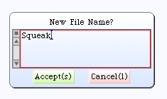

Name the Main Project
Click on the name along the bottom of the new project window. The tag should turn red. You can then type in your new project name. Hit Return when you have typed the new name. The title bar of the window will change.
Click once inside your new project window to go back into the project world.
Perform a "save as" operation. I recommend you name the new image "Squeak". This is the default image name. From this point forward, when you re-launch Squeak you will find yourself back at this project world.
Now that we have a saved image, go ahead and quit Squeak. We will not need it right now.
Okay. We're all set to go. Let's explore the game design.